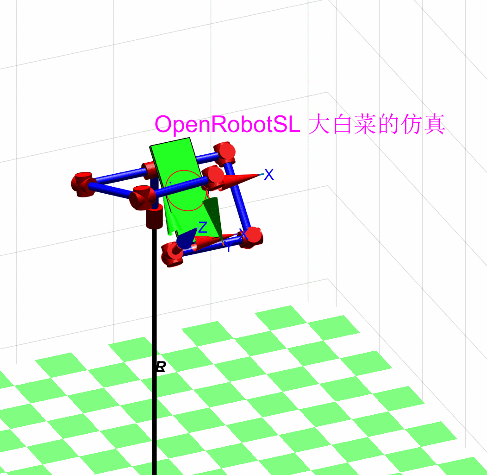
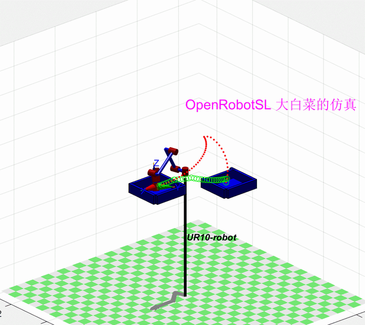

Home
======================================================================
我的测试结果及程序
下面是我测试的代码：
本彩笔工程能力一般，大部分还是做算法仿真，如何在matlab下纯手搓代码实现机器人和虚拟物理环境仿真一直是个问题，就做了一些娱乐算法，主要是测试自己写的一些工具箱和算法函数，明年会开源部分代码。
如果您使用VREP,GAZEBO等具有物理环境的仿真，会相当轻松，或者调用一些算法库。
以下仿真是我们论文或者老师项目中用到的，所有算法，建模全部手搓，仅供娱乐和提供思路。
一：双臂教学，场景就是 双臂协作
二：码垛搬运，涉及到路径最优和避障规划
三：导纳和阻抗控制，期望运动是红色，受力运动是绿色
四：冗余机械臂关节力矩控制
五：冗余机械臂避障规划
六：AGV+机械臂复合机器人开门控制
七：点约束控制